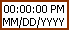

Time Stamp Constant
Owning Palette: Timing VIs and Functions
Requires: Base Development System
Use the time stamp constant to pass a time and date value to the block diagram.

 Add to the block diagram Add to the block diagram |
 Find on the palette Find on the palette |
The default value is zero seconds since 12:00 a.m., Friday, January 1, 1904, Universal Time [01-01-1904 00:00:00]. To change the time and date, right-click the constant and select Data Operations»Set Time and Date from the shortcut menu to display the Set Time and Date dialog box. You also can right-click the constant and select Data Operations»Set Time to Now from the shortcut menu to set the time and date value to the current time and date.
 | Note If you convert a time stamp to a variant, the variant indicator displays the current value of the time stamp that you wired to it. |